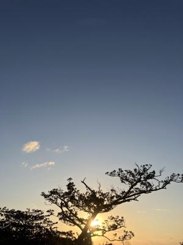
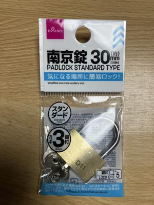
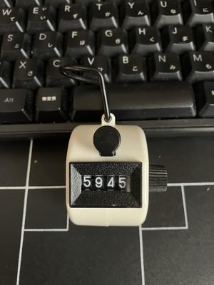

うるがいの話 ある日
最新: 百均【うるがいの話 ある日】とは 一日だけのプログです
『うるがいの話』の最新一日だけのプログで、通信料が少なく経済的だ。カニの画像をクリックすると全ての日付が載る『うるがいの話』サイトを表示します
|
|
【うるがいの話】 うるがい(ｳﾙｶﾞｲ urugai)とは、『もずくがに』の名前でとても大きくなります。 |
|---|---|
|
|
【カミマヤーの話】 猫のことを方言でマヤーといいます。カミマヤー（kamimayaa）とは、神の猫のことです。 |
|
【たながぁの音楽】 たながぁ（ﾀﾅｶﾞｰ tanagaa）とは手長えびのことで、何種類かあり大きいのは車 エビぐらいになります。 |

|
【ぶながぁの話】 ぶながぁ(ﾌﾞﾅｶﾞｰ bunagaa)とは、赤い髪の毛、赤い身体、そして身長は１ｍ２０ｃｍ ぐらい、川の蟹を食べているの目撃された。場所は沖縄県国頭郡大宜味村のと ある村僕の隣近所に住んでいる爺さんから、聞いた話です。 |
|
|
【ギーマの話】 ギーマ(giima)とは、山原の里山に咲くスズランに似た、 花を付けます。実は食べられます、 気が付くと口の周りが紫になっています。 |
2024年12月21日 (土）百均
17:05

スミマセン、カギ、あー、郵便ポストに付ける鍵です。どこにありますか
？、『ハー』、あれ？、しばらく見つめ合う二人、ようやく事態を把握し
たオバサンが『私、店員でないです』、ムッとして離れていった。
店員さんと同じような服装をしたオバサンだったのでてっきり、あー恥ず
かしい。そして、本物の店員さんに鍵のありかを教えてもらう。

お義母さんが住んで居たマンションのポストが、荒らされているようで鍵
を買って来いといわれ、鍵屋へいくも休みで、もしかしたら１００円ショ
ップにあるかもと思った次第。もともとは、２０１８年７月３１日に愛猫
を火葬している間に、１００円ショップで買ったカウンターが、壊れたの
で購入したいので１００円ショップが年頭にあった。１００円と言いなが
ら、６年以上も使えた。
